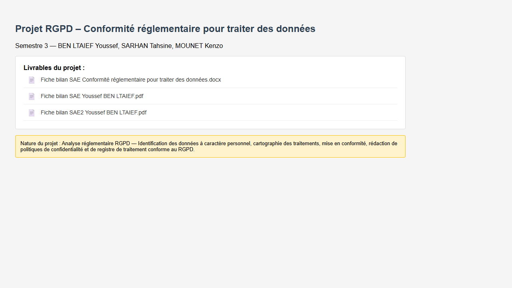
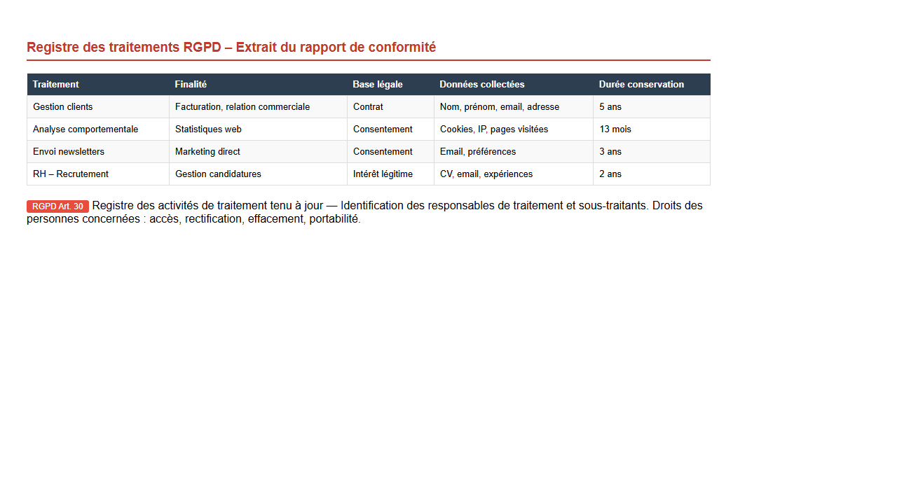

| Nom de la SAE | Conformité réglementaire pour traiter des données | |||
| Coéquipiers : | Tahsine SARHAN | Kenzo MOUNET | ||
| Sujet spécifique | Mise en conformité RGPD dans un contexte « entreprise / organisation » : identifier les données personnelles, vérifier si la collecte et l'usage sont licites, proposer des solutions. |
| Objectifs |
Comprendre les enjeux RGPD dans une situation réelle. Vérifier la licéité de la collecte et du stockage (base légale, finalité, minimisation). Préparer les données en respectant la conformité : anonymisation/pseudonymisation, diffusion contrôlée. Proposer des mesures concrètes : sécurité, conservation, gestion des demandes (droits RGPD). |
| Livrables | Un rapport de conformité RGPD |
| Compétence | Traiter |
| Apprentissages critiques sollicités | AC21.01 : Comprendre l'organisation des données de l'entreprise |
| Composantes essentielles à respecter | Structurer et décrire les données (ce qui est personnel / sensible). |
| Comprendre comment préparer les données pour l'usage. | |
| Faire attention à la sécurité et aux accès. |
| Compétence | Analyser |
| Apprentissages critiques sollicités | AC22.05 : Apprécier les limites de validité et les conditions d'application d'une analyse |
| Composantes essentielles à respecter | Conditions : base légale claire + finalité justifiée. |
| Limites : trop de données et un stockage trop long. | |
| Analyse des risques : repérer les points sensibles + proposer des solutions. |
| Compétence | Valoriser |
| Apprentissages critiques sollicités | AC23.01 : Saisir l'intérêt de mobiliser de manière proactive les ressources métiers liées à l'environnement (y compris économique, international...) |
| AC23.02 : Savoir défendre ses choix d'analyses | |
| AC23.04 : Prendre conscience de la rigueur requise dans ses productions et dans la communication à leur propos | |
| AC23.05 : Comprendre les enjeux des relations en milieu professionnel adaptées à l'interlocuteur et à sa culture | |
| Composantes essentielles à respecter | Mobiliser les textes réglementaires (RGPD, CNIL) comme ressources métiers. |
| Justifier les choix de base légale, de durée de conservation et de mesures de sécurité. | |
| Produire un rapport rigoureux et structuré (registre des traitements, politique de confidentialité). | |
| Adapter la communication selon l'interlocuteur (DPO, direction, services opérationnels). |
| Savoirs / connaissances | Savoir-faire | Savoir-être |
|---|---|---|
|
Principes RGPD : finalité, minimisation, transparence, sécurité. Notions : base légale, consentement, droits des personnes, conservation. Différence : anonymisation / pseudonymisation. Notions de risques : fuite de données, accès non autorisé, profilage. |
Identifier les données personnelles dans un jeu de données. Décrire un traitement : finalité, base légale, durée de conservation. Proposer des actions concrètes : limiter les champs, anonymiser, sécuriser. Produire un document clair : tableau de conformité + recommandations. |
Rigueur (pas d'approximation dans la conformité). Discrétion (données personnelles). Esprit critique (remettre en question l'utilité de certaines données). Communication simple et pro. Travail en équipe (répartition des parties, relecture). |
Ce que je trouve bien réalisé, pourquoi ?
Le rendu est bien car il relie le RGPD à des actions concrètes : on ne fait pas que définir, on propose des solutions (durée de conservation, sécurité, anonymisation/pseudonymisation). Le document est aussi assez clair : on comprend quelles données, pourquoi elles existent, et ce qu'il faut améliorer pour être conforme.
Ce que je n'ai pas bien compris ; ce qui serait à améliorer pour une prochaine fois : pourquoi ? comment ?
J'ai encore des hésitations sur certains points comme choisir la bonne base légale selon les cas.
Pour une prochaine fois : demander plus tôt un avis à l'enseignant sur base légale + plan du rapport ; améliorer la partie « preuves » : plus de tableaux et schémas simples.

